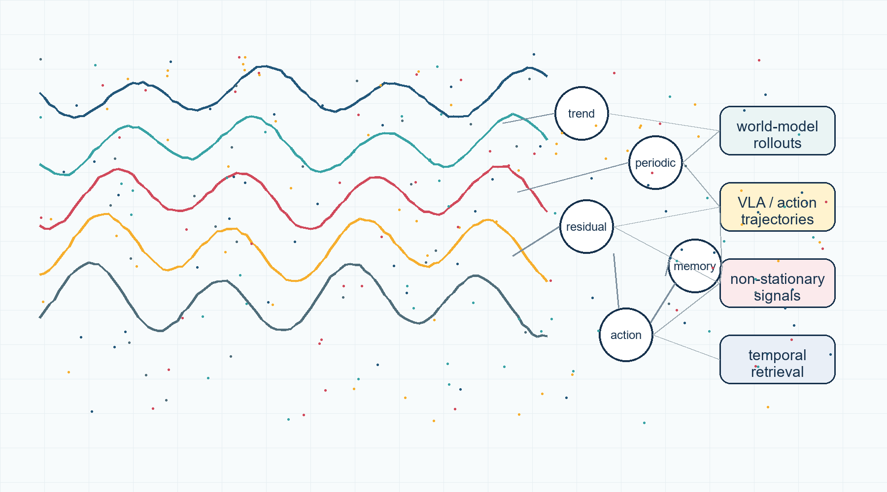

Research
Temporal representations as the common object across time-series ML, foundation models, and world-model rollouts.
Current Research Focuses
- Temporal representation for foundation and world models. Temporal abstractions for model rollouts, action histories, state/action sequences, temporal memory, computer-use traces, and VLA trajectories.
- Time-series representation learning under non-stationarity. Decomposition, stationarity-aware retrieval, forecasting diagnostics, classification, symbolic regression, and robust evaluation of noisy sequential signals.
- Representation-driven research software. Reproducible tools for decomposition and similarity that expose inspectable temporal components, compact JSON outputs, and shareable HTML reports.
